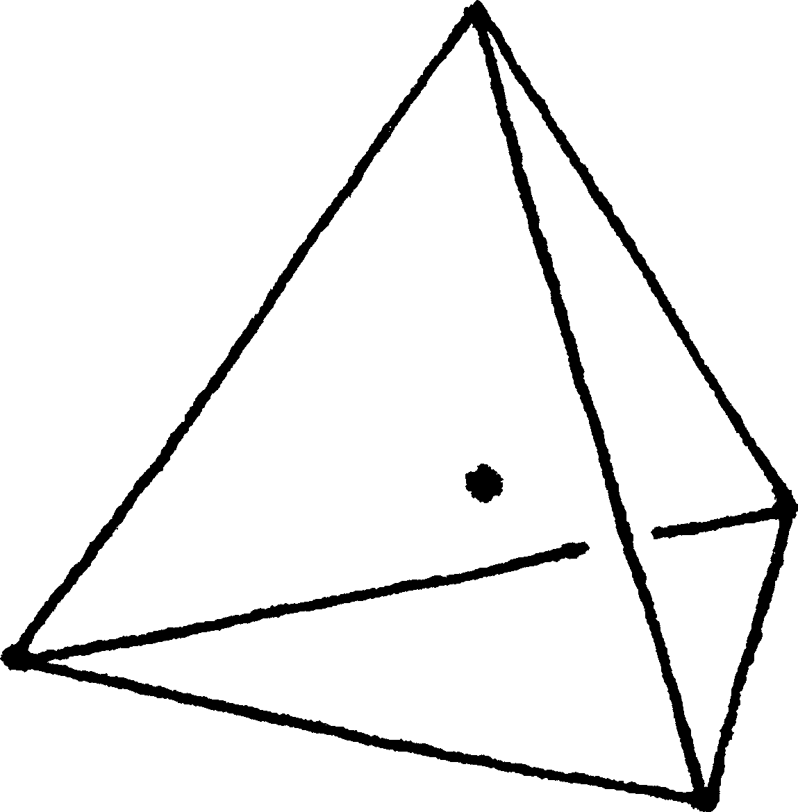
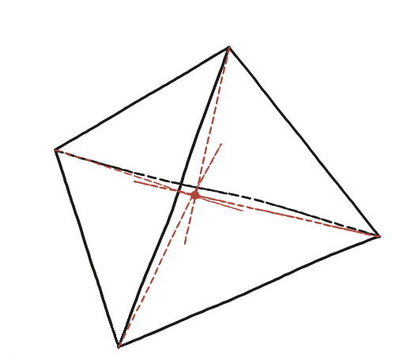

On és el centre d'un tetraedre regular?

Endevina per simetria
Un tetraedre regular té una simetria total entre els seus quatre vèrtexs —cap n'és especial. Si el "centre" existeix, aquesta simetria ja diu una cosa forta sobre on ha de ser.
La construcció que ho fa concret
Des de cada vèrtex, es traça el segment fins al centre de gravetat de la cara oposada. Per simetria, aquests quatre segments haurien de trobar-se tots en un sol punt. Comprovant-ho amb coordenades: si els quatre vèrtexs són A, B, C, D, quin punt surt de fer la mitjana dels quatre?

Tancar-ho
El punt G=(A+B+C+D)/4 és, alhora, el punt que hi ha a 3/4 del camí de cada vèrtex cap al centre de gravetat de la cara oposada. L'àlgebra que ho demostra són dues línies. El centre de gravetat de la cara oposada a A és (B+C+D)/3, i el punt situat a 3/4 del camí d'A cap allà és:
A + (3/4)·[(B+C+D)/3 − A] = A + (B+C+D)/4 − (3/4)A = (A+B+C+D)/4 = G
I com que l'expressió (A+B+C+D)/4 no distingeix cap dels quatre vèrtexs, el mateix càlcul amb B, C o D al lloc d'A dona igualment G: els quatre segments hi passen tots. Aquí no cal ni tan sols que el tetraedre sigui regular —el càlcul val per a qualsevol tetraedre—; la regularitat és el que fa, a més, que G sigui equidistant dels quatre vèrtexs i mereixi el nom de "centre".
El centre d'un tetraedre regular és el punt G=(A+B+C+D)/4, la mitjana dels quatre vèrtexs. Es troba a 3/4 del camí de cada vèrtex cap al centre de gravetat de la cara oposada —l'anàleg en 3D de la relació 2:1 del baricentre d'un triangle en 2D.
Comprovació
Amb A=(1,1,1), B=(1,−1,−1), C=(−1,1,−1), D=(−1,−1,1) —un tetraedre regular clàssic inscrit en un cub—: G=(0,0,0). El centre de la cara BCD és ((1−1−1)/3,(−1+1−1)/3,(−1−1+1)/3)=(−1/3,−1/3,−1/3). El punt a 3/4 del camí d'A cap a aquest centre: A+(3/4)((−1/3,−1/3,−1/3)−A) = (1,1,1)+(3/4)(−4/3,−4/3,−4/3) = (1,1,1)+(−1,−1,−1) = (0,0,0) = G ✓.